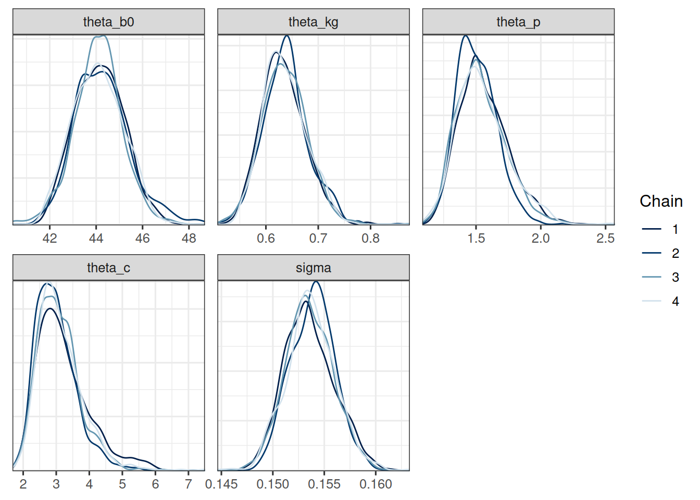
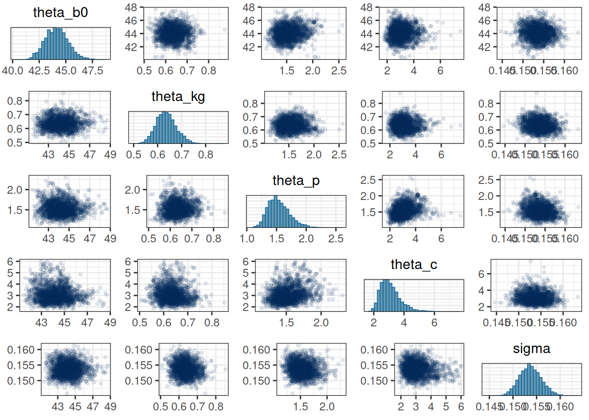

This appendix shows how the Claret-Bruno model can be implemented in a Bayesian framework using the brms package in R.
Setup and load data
First we need to load the necessary packages and set some default options for the MCMC sampling. We also set the theme for the plots to theme_bw with a base size of 12.
Show the code
library(bayesplot)library(brms)library(ggplot2)library(gt)library(here)library(janitor)library(jmpost)library(modelr)library(posterior)library(readxl)library(rstan)library(tidybayes)library(tidyverse)library(truncnorm)if (require(cmdstanr)) {# If cmdstanr is available, instruct brms to use cmdstanr as backend # and cache all Stan binariesoptions(brms.backend ="cmdstanr", cmdstanr_write_stan_file_dir =here("_brms-cache"))dir.create(here("_brms-cache"), FALSE) # create cache directory if not yet available} else { rstan::rstan_options(auto_write =TRUE)}# MCMC optionsoptions(mc.cores =4)ITER <-1000# number of sampling iterations after warm upWARMUP <-2000# number of warm up iterationsCHAINS <-4BAYES.SEED <-878REFRESH <-500theme_set(theme_bw(base_size =12))
We also need a small function definition, which is still missing in brms:
We will use the publicly published tumor size data from the OAK study, see here. In particular we are using the S1 data set, which is the fully anonymized data set used in the publication. For simplicity, we have copied the data set in this GitHub repository.
In the Claret-Bruno model we have again the baseline SLD and the growth rate as in the Stein-Fojo model. Then in addition we have the inhibition response rate \(\psi_{p}\) and the treatment resistance rate \(\psi_{c}\). The model is then:
for positive times \(t_{ij}\). Again, if the time \(t\) is negative, i.e. the treatment has not started yet, then it is reasonable to assume that the tumor cannot shrink yet. That is, we have then \(\psi_{pi} = 0\). Therefore, the final model for the mean SLD is:
For the new model parameters we can again use log-normal prior distributions.
Fit model
We can now fit the model using brms. The structure is determined by the model formula:
Show the code
formula <-bf(sld ~ ystar, nl =TRUE) +# Define the mean for the likelihoodnlf( ystar ~int_step(year >0) * (b0 *exp(kg * year - (p / c) * (1-exp(-c * year)))) +int_step(year <=0) * (b0 *exp(kg * year)) ) +# Define the standard deviation (called sigma in brms) as a # coefficient tau times the mean.# sigma = tau * ystar is modelled on the log scale though, therefore:nlf(sigma ~log(tau) +log(ystar)) +lf(tau ~1) +# Define nonlinear parameter transformationsnlf(b0 ~exp(lb0)) +nlf(kg ~exp(lkg)) +nlf(p ~exp(lp)) +nlf(c ~exp(lc)) +# Define random effect structurelf(lb0 ~1+ (1| id)) +lf(lkg ~1+ (1| id)) +lf(lp ~1+ (1| id)) +lf(lc ~1+ (1| id))# Define the priorspriors <-c(prior(normal(log(65), 1), nlpar ="lb0"),prior(normal(log(0.5), 0.1), nlpar ="lkg"),prior(normal(0, 1), nlpar ="lp"),prior(normal(log(0.5), 0.1), nlpar ="lc"),prior(normal(2, 1), lb =0, nlpar ="lb0", class ="sd"),prior(normal(1, 1), lb =0, nlpar ="lkg", class ="sd"),prior(normal(0, 0.5), lb =0, nlpar ="lp", class ="sd"),prior(normal(0, 0.5), lb =0, nlpar ="lc", class ="sd"),prior(normal(0, 1), lb =0, nlpar ="tau"))# Initial values to avoid problems at the beginningn_patients <-nlevels(df$id)inits <-list(b_lb0 =array(3.61),b_lkg =array(-0.69),b_lp =array(0),b_lc =array(-0.69),sd_1 =array(0.5),sd_2 =array(0.5),sd_3 =array(0.1),sd_4 =array(0.1),b_tau =array(0.161),z_1 =matrix(0, nrow =1, ncol = n_patients),z_2 =matrix(0, nrow =1, ncol = n_patients),z_3 =matrix(0, nrow =1, ncol = n_patients),z_4 =matrix(0, nrow =1, ncol = n_patients))# Fit the modelsave_file <-here("session-tgi/cb3.RData")if (file.exists(save_file)) {load(save_file)} elseif (interactive()) { fit <-brm(formula = formula,data = df,prior = priors,family =gaussian(),init =rep(list(inits), CHAINS),chains = CHAINS, iter = WARMUP + ITER, warmup = WARMUP, seed = BAYES.SEED,refresh = REFRESH,adapt_delta =0.9,max_treedepth =15 )save(fit, file = save_file)}# Summarize the fitsave_fit_sum_file <-here("session-tgi/cb3_fit_sum.RData")if (file.exists(save_fit_sum_file)) {load(save_fit_sum_file)} else { fit_sum <-summary(fit)save(fit_sum, file = save_fit_sum_file)}fit_sum
Family: gaussian
Links: mu = identity; sigma = log
Formula: sld ~ ystar
ystar ~ int_step(year > 0) * (b0 * exp(kg * year - (p/c) * (1 - exp(-c * year)))) + int_step(year <= 0) * (b0 * exp(kg * year))
sigma ~ log(tau) + log(ystar)
tau ~ 1
b0 ~ exp(lb0)
kg ~ exp(lkg)
p ~ exp(lp)
c ~ exp(lc)
lb0 ~ 1 + (1 | id)
lkg ~ 1 + (1 | id)
lp ~ 1 + (1 | id)
lc ~ 1 + (1 | id)
Data: df (Number of observations: 4099)
Draws: 4 chains, each with iter = 4000; warmup = 2000; thin = 1;
total post-warmup draws = 8000
Multilevel Hyperparameters:
~id (Number of levels: 701)
Estimate Est.Error l-95% CI u-95% CI Rhat Bulk_ESS Tail_ESS
sd(lb0_Intercept) 0.58 0.02 0.55 0.61 1.01 419 1044
sd(lkg_Intercept) 1.04 0.06 0.92 1.17 1.01 696 1181
sd(lp_Intercept) 1.58 0.11 1.39 1.80 1.01 443 1110
sd(lc_Intercept) 1.57 0.15 1.28 1.87 1.01 657 935
Regression Coefficients:
Estimate Est.Error l-95% CI u-95% CI Rhat Bulk_ESS Tail_ESS
tau_Intercept 0.15 0.00 0.15 0.16 1.00 1345 3193
lb0_Intercept 3.62 0.02 3.57 3.66 1.01 200 330
lkg_Intercept -1.00 0.07 -1.14 -0.86 1.01 1020 1906
lp_Intercept -0.82 0.14 -1.10 -0.57 1.01 643 1594
lc_Intercept -0.13 0.10 -0.34 0.07 1.00 1335 2478
Draws were sampled using sample(hmc). For each parameter, Bulk_ESS
and Tail_ESS are effective sample size measures, and Rhat is the potential
scale reduction factor on split chains (at convergence, Rhat = 1).
We did obtain here a warning about divergent transitions, see stan documentation for details:
Warning message:
There were 4489 divergent transitions after warmup. Increasing adapt_delta above 0.9 may help. See http://mc-stan.org/misc/warnings.html#divergent-transitions-after-warmup
However, the effective sample size is high, i.e. the Rhat values are close to 1. This indicates that the chains have converged. We can proceed with the post-processing.
Let’s first look at the population level parameters:
Show the code
cb_pop_params <-c("theta_b0", "theta_kg", "theta_p", "theta_c", "sigma")mcmc_trace(post_df, pars = cb_pop_params)
Show the code
mcmc_dens_overlay(post_df, pars = cb_pop_params)

Show the code
mcmc_pairs( post_df, pars = cb_pop_params,off_diag_args =list(size =1, alpha =0.1))

The trace plots look good. The chains seem to have converged and the pairs plot shows no strong correlations between the parameters. Let’s check the table:
Warning: Removed 1 row containing missing values or values outside the scale range
(`geom_line()`).
This also looks good. The model seems to capture the data well.
With jmpost
This model can also be fit with the jmpost package. The corresponding function is LongitudinalClaretBruno. The statistical model is specified in the vignette here.
Homework: Implement the generalized Claret-Bruno model with jmpost and compare the results with the brms implementation.
Source Code
---title: "4. Claret-Bruno model"author: - Daniel Sabanés Bové - Francois Mercierdate: last-modifiededitor_options: chunk_output_type: inlineformat: html: code-fold: show html-math-method: mathjaxcache: true---This appendix shows how the Claret-Bruno model can be implemented in a Bayesian framework using the `brms` package in R.## Setup and load data{{< include _setup_and_load.qmd >}}{{< include _load_data.qmd >}}## Claret-Bruno modelIn the Claret-Bruno model we have again the baseline SLD and the growth rate as in the Stein-Fojo model. Then in addition we have the inhibition response rate $\psi_{p}$ and the treatment resistance rate $\psi_{c}$. The model is then:$$y^{*}(t_{ij}) = \psi_{b_{0}i} \exp \left\{ \psi_{k_{g}i} t_{ij} - \frac{\psi_{pi}}{\psi_{ci}} (1 - \exp(-\psi_{ci} t_{ij}))\right\}$$for positive times $t_{ij}$. Again, if the time $t$ is negative, i.e. the treatment has not started yet, then it is reasonable to assume that the tumor cannot shrink yet. That is, we have then $\psi_{pi} = 0$. Therefore, the final model for the mean SLD is:$$y^{*}(t_{ij}) = \begin{cases} \psi_{b_{0}i} \exp(\psi_{k_{g}i} t_{ij}) & \text{if } t_{ij} < 0 \\\psi_{b_{0}i} \exp \{ \psi_{k_{g}i} t_{ij} - \frac{\psi_{pi}}{\psi_{ci}} (1 - \exp(-\psi_{ci} t_{ij}))\} & \text{if } t_{ij} \geq 0 \end{cases}$$For the new model parameters we can again use log-normal prior distributions.## Fit modelWe can now fit the model using `brms`. The structure is determined by the model formula:```{r}#| label: specify_cb_modelformula <-bf(sld ~ ystar, nl =TRUE) +# Define the mean for the likelihoodnlf( ystar ~int_step(year >0) * (b0 *exp(kg * year - (p / c) * (1-exp(-c * year)))) +int_step(year <=0) * (b0 *exp(kg * year)) ) +# Define the standard deviation (called sigma in brms) as a # coefficient tau times the mean.# sigma = tau * ystar is modelled on the log scale though, therefore:nlf(sigma ~log(tau) +log(ystar)) +lf(tau ~1) +# Define nonlinear parameter transformationsnlf(b0 ~exp(lb0)) +nlf(kg ~exp(lkg)) +nlf(p ~exp(lp)) +nlf(c ~exp(lc)) +# Define random effect structurelf(lb0 ~1+ (1| id)) +lf(lkg ~1+ (1| id)) +lf(lp ~1+ (1| id)) +lf(lc ~1+ (1| id))# Define the priorspriors <-c(prior(normal(log(65), 1), nlpar ="lb0"),prior(normal(log(0.5), 0.1), nlpar ="lkg"),prior(normal(0, 1), nlpar ="lp"),prior(normal(log(0.5), 0.1), nlpar ="lc"),prior(normal(2, 1), lb =0, nlpar ="lb0", class ="sd"),prior(normal(1, 1), lb =0, nlpar ="lkg", class ="sd"),prior(normal(0, 0.5), lb =0, nlpar ="lp", class ="sd"),prior(normal(0, 0.5), lb =0, nlpar ="lc", class ="sd"),prior(normal(0, 1), lb =0, nlpar ="tau"))# Initial values to avoid problems at the beginningn_patients <-nlevels(df$id)inits <-list(b_lb0 =array(3.61),b_lkg =array(-0.69),b_lp =array(0),b_lc =array(-0.69),sd_1 =array(0.5),sd_2 =array(0.5),sd_3 =array(0.1),sd_4 =array(0.1),b_tau =array(0.161),z_1 =matrix(0, nrow =1, ncol = n_patients),z_2 =matrix(0, nrow =1, ncol = n_patients),z_3 =matrix(0, nrow =1, ncol = n_patients),z_4 =matrix(0, nrow =1, ncol = n_patients))# Fit the modelsave_file <-here("session-tgi/cb3.RData")if (file.exists(save_file)) {load(save_file)} elseif (interactive()) { fit <-brm(formula = formula,data = df,prior = priors,family =gaussian(),init =rep(list(inits), CHAINS),chains = CHAINS, iter = WARMUP + ITER, warmup = WARMUP, seed = BAYES.SEED,refresh = REFRESH,adapt_delta =0.9,max_treedepth =15 )save(fit, file = save_file)}# Summarize the fitsave_fit_sum_file <-here("session-tgi/cb3_fit_sum.RData")if (file.exists(save_fit_sum_file)) {load(save_fit_sum_file)} else { fit_sum <-summary(fit)save(fit_sum, file = save_fit_sum_file)}fit_sum```We did obtain here a warning about divergent transitions, see [stan documentation](http://mc-stan.org/misc/warnings.html#divergent-transitions-after-warmup) for details:````Warning message:There were 4489 divergent transitions after warmup. Increasing adapt_delta above 0.9 may help. See http://mc-stan.org/misc/warnings.html#divergent-transitions-after-warmup ````However, the effective sample size is high, i.e. the Rhat values are close to 1. This indicates that the chains have converged. We can proceed with the post-processing.## Parameter estimates```{r}#| label: cb_post_processingpost_df_file <-here("session-tgi/cb3_post_df.RData")if (file.exists(post_df_file)) {load(post_df_file)} else { post_df <-as_draws_df(fit) |>subset_draws(iteration = (1:1000) *2)save(post_df, file = post_df_file)}head(names(post_df), 10)post_df <- post_df |>mutate(theta_b0 =exp(b_lb0_Intercept + sd_id__lb0_Intercept^2/2),theta_kg =exp(b_lkg_Intercept + sd_id__lkg_Intercept^2/2),theta_p =exp(b_lp_Intercept + sd_id__lp_Intercept^2/2),theta_c =exp(b_lc_Intercept + sd_id__lc_Intercept^2/2),omega_0 = sd_id__lb0_Intercept,omega_g = sd_id__lkg_Intercept,omega_p = sd_id__lp_Intercept,omega_c = sd_id__lc_Intercept,cv_0 =sqrt(exp(sd_id__lb0_Intercept^2) -1),cv_g =sqrt(exp(sd_id__lkg_Intercept^2) -1),cv_p =sqrt(exp(sd_id__lp_Intercept^2) -1),cv_c =sqrt(exp(sd_id__lc_Intercept^2) -1),sigma = b_tau_Intercept )```Let's first look at the population level parameters:```{r}#| label: cb_pop_paramscb_pop_params <-c("theta_b0", "theta_kg", "theta_p", "theta_c", "sigma")mcmc_trace(post_df, pars = cb_pop_params)mcmc_dens_overlay(post_df, pars = cb_pop_params)mcmc_pairs( post_df, pars = cb_pop_params,off_diag_args =list(size =1, alpha =0.1))```The trace plots look good. The chains seem to have converged and the pairs plot shows no strong correlations between the parameters. Let's check the table:```{r}#| label: cb_post_summarypost_sum <- post_df |> dplyr::select(theta_b0, theta_kg, theta_p, theta_c, omega_0, omega_g, omega_p, omega_c, cv_0, cv_g, cv_p, cv_c, sigma) |>summarize_draws() |>gt() |>fmt_number(decimals =3)post_sum```We see similar estimated values as before for $\theta_{b_{0}}$, $\theta_{k_{g}}$ and $\sigma$.## Observation vs model fitWe can now compare the model fit to the observations. Let's do this for the first 20 patients again:```{r}#| label: cb_model_fitpt_subset <-as.character(1:20)df_subset <- df |>filter(id %in% pt_subset)df_sim_save_file <-here("session-tgi/cb3_sim_df.RData")if (file.exists(df_sim_save_file)) {load(df_sim_save_file)} else { df_sim <- df_subset |>data_grid(id = pt_subset, year =seq_range(year, 101) ) |>add_epred_draws(fit) |>median_qi()save(df_sim, file = df_sim_save_file)}df_sim |>ggplot(aes(x = year, y = sld)) +facet_wrap(~ id) +geom_ribbon(aes(y = .epred, ymin = .lower, ymax = .upper), alpha =0.3, fill ="deepskyblue" ) +geom_line(aes(y = .epred), color ="deepskyblue") +geom_point(data = df_subset, color ="tomato") +coord_cartesian(ylim =range(df_subset$sld)) +scale_fill_brewer(palette ="Greys") +labs(title ="CB model fit")```This also looks good. The model seems to capture the data well.## With `jmpost`This model can also be fit with the `jmpost` package. The corresponding function is `LongitudinalClaretBruno`. The statistical model is specified in the vignette [here](https://genentech.github.io/jmpost/main/articles/statistical-specification.html#claret-bruno-model).Homework: Implement the generalized Claret-Bruno model with `jmpost` and compare the results with the `brms` implementation.